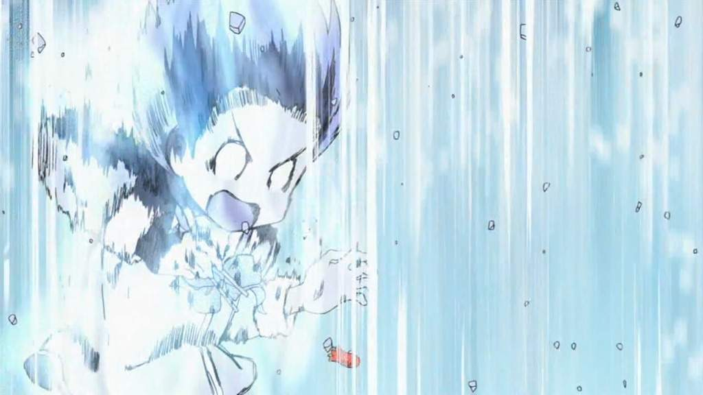

Juliano's simple blog / Super archive
About me
I have not achieved anything for me to describe myself on the web.
Although I have been programming since last year and stopped but got into it again (and more fun!) because of my friends (thank you! spending time with you all in the comlab is really nice!).
I really like not dealing with Object Oriented programming because I've had enough frustrations and sadness trying to develop anything for Java/Android.
I think I could identify myself as a Duck-tape Programmer
!!! WATCH NICHIJOU !!!

Music
Art
JoJo Colored Scanlations Colored Covers/Pages Repository
- Part 5
- Part 6
- Part 7
- Part 8
Rare Araki Art
Artbooks
Good Articles
Good social media sites
gotcha... there's no such thing as good social media sites bro, they are terrible by design, see here
Good sites